6.5 Practice Problems
6.5.1 Basic Console Applications
a. Big Summer. Calculates the sum of the positive integers from 1 up to a user-specified limit.
Output 6.5.1a
Enter a positive integer: 123456789
1 + 2 + 3 + ... + 123,456,789 = 7,620,789,436,823,655
Adapt Listing 6.2.1a using BigInteger to avoid overflow.
b. Capybara. Plays the game of Capybara. The player repeatedly rolls a pair of dice and wins a dollar amount equal to the sum. Play continues until a sum of 7, 8, or 9 is rolled, at which point the game ends. If the first roll is 7, 8, or 9, the player wins nothing.
Output 6.5.1b
Welcome to Capybara.
4 + 6 = 10
2 + 3 = 5
3 + 3 = 6
1 + 6 = 7
You win $21.
c. Leibniz Accuracy. Outputs the approximation of π obtained by summing the first n terms of the Leibniz series shown in Listing 6.2.1b, for n = 10, 100, 1000, and so on, up to a billion. Also outputs the accuracy of each approximation — the number of consecutive correct digits after the decimal point.
Output 6.5.1c
π = 4 - 4/3 + 4/5 - 4/7 + ...
Terms Result Accuracy
10 3.2323158094 0
100 3.1514934011 1
1,000 3.1425916543 2
10,000 3.1416926436 3
100,000 3.1416026535 3
1,000,000 3.1415936536 5
10,000,000 3.1415927536 6
100,000,000 3.1415926636 7
1,000,000,000 3.1415926546 8
Implement a helper method that converts two double values to strings, then iterates over the
characters to locate the first position at which they differ.
d. Greatest Substring. Prompts the user for a string of digits and an integer k ≤ 9, and outputs the greatest k-digit substring.
Output 6.5.1d
Enter a string of digits and an integer ≤ 9: 9093286194516827995 4
Greatest 4-digit substring: 9451
Hint: convert each k-digit substrings to an int using Integer.parseInt.
e. Distinct Digits. Prompts the user to enter a four-digit year and outputs the first subsequent year with four different digits.
Output 6.5.1e
Enter a four-digit year: 1987
The first subsequent year with four different digits: 2013
A straightforward approach converts the year to a string and compares each pair of characters using a nested loop. Alternatively, for each position k, the digit can be checked for inclusion in the substring starting at index k + 1.
f. Middle Square. Outputs five pseudorandom numbers generated from a user-selected seed using the middle square method. Let n be the number of digits in the seed. To generate the first pseudorandom number, square the seed, convert the result to a string, and left-pad it with a zero if necessary so that it contains exactly 2n digits. The first pseudorandom number is the substring of length n beginning at index n/2 (integer division). This value becomes the next seed, and the process repeats.
Figure 6.5.1f: Middle Square Illustration with Seed 1352
{kind=link}
In Figure 6.5.1f, n = 4 and 13522 = 1827904. The result is prepended with a zero so that it has 2n = 8 digits: 01827904. The n-digit substring beginning at index n/2 is 8279, which becomes the next seed.
Output 6.5.1f-1
Initial seed: 1352
Output 1: 8279
Output 2: 5418
Output 3: 3547
Output 4: 5812
Output 5: 7793
Output 6.5.1f-2
Initial seed: 12345
Output 1: 523990
Output 2: 565520
Output 3: 812870
Output 4: 757636
Output 5: 012308
g. Back and Forth. A robot moves along a straight line, starting at point A. It walks to point B at a constant speed of 1 unit per second. Upon reaching B, it immediately turns around and walks back to A at the same speed. This process repeats indefinitely and gives the robot a sense of fulfillment.
Write a program that prompts the user for positive integers A and B, and time T in seconds, and outputs the location of the robot at time T.
Output 6.5.1g-1
Enter A, B, and T: 5 13 27
Location at time 27: 10
Output 6.5.1g-2
Enter A, B, and T: 1 500 12345
Location at time 12345: 370
One approach is to simulate the robot's motion by incrementing or decrementing its position once per second for T seconds. This works well for moderate values of T, but becomes impractical when T is very large. For an extra challenge, solve the problem mathematically (without loops) by exploiting the periodic nature of the robot's motion. This approach works efficiently even for arbitrarily large values of T.
Output 6.5.1g-3
Enter A, B, and T: 3 97 12345678987654321
Location at time 12345678987654321: 84
h. Factorial Digit Sum. The factorial of k, denoted k!, is the product of positive integers from 1 to k. For example, 6! = 6 × 5 × 4 × 3 × 2 × 1 = 720.
Write a program that prompts the user for a positive integer k and outputs the sum of the digits in the factorial of k.
Output 6.5.1h-1
Enter a positive integer: 6
The digits of 6! sum to 9.
Output 6.5.1h-2
Enter a positive integer: 12345
The digits of 12345! sum to 189000.
Adapted from Project Euler, Problem 20.
i. Euclidean Cake. Happy birthday! Your best friend has baked a cake for you. It’s rectangular, your favorite shape. You have resolved to eat just one slice each day, and it must be square — tastes better that way. Specifically, each day you will eat the largest square slice that can be removed with a single straight cut. Suddenly you have a great idea: you can write a program that prompts the user for the dimensions of a cake and outputs the size of the remaining cake after each successive slice.
Output 6.5.1i-1
Enter dimensions of cake: 8 12
Size of cake on day 1: 8 x 12
Size of cake on day 2: 4 x 8
Size of cake on day 3: 4 x 4
The cake is gone.
Output 6.5.1i-2
Enter dimensions of cake: 8 13
Size of cake on day 1: 8 x 13
Size of cake on day 2: 5 x 8
Size of cake on day 3: 3 x 5
Size of cake on day 4: 2 x 3
Size of cake on day 5: 1 x 2
Size of cake on day 6: 1 x 1
The cake is gone.
Output 6.5.1i-3
Enter dimensions of cake: 42 30
Size of cake on day 1: 30 x 42
Size of cake on day 2: 12 x 30
Size of cake on day 3: 12 x 18
Size of cake on day 4: 6 x 12
Size of cake on day 5: 6 x 6
The cake is gone.
The user may enter the length and width in either order, but the program displays all dimensions with the shorter side first.
j. Babylonian Square Root. Various mathematical techniques are known for approximating square roots. One such technique, called the Babylonian method, is based on the following idea: if k is an approximation of the square root of n, then the average of k and n/k is a better approximation.
Write a program that approximates the square root of a user-selected number n by starting with
n/2 as an initial approximation and repeatedly applying the Babylonian update rule until
successive approximations are equal (within floating-point precision). This indicates that further
iteration produces no change in the stored double value.
Output 6.5.1j-1
Enter a positive number: 2
1. 1.500000
2. 1.416667
3. 1.414216
4. 1.414214
5. 1.414214
Output 6.5.1j-2
Enter a positive number: 23.6
1. 6.900000
2. 5.160145
3. 4.866830
4. 4.857991
5. 4.857983
6. 4.857983
k. Exam Strategy. Course grades are determined by four exams, each consisting of 100 questions worth a single point. The average exam score is converted to a letter grade according to the following scale:
- A = [90, 100]
- B = [80, 90)
- C = [70, 80)
- D = [60, 70)
- F = [0, 60)
So far, you have taken three exams. You have prepared well for the fourth exam and you are confident that you can answer every question correctly, but you do not want to waste your time answering more questions than necessary.
Write a program that prompts the user for the first three exam scores and outputs the smallest number of questions that must be answered correctly on the fourth exam to earn the highest attainable letter grade. If passing the course is impossible, the program instead advises the user to skip the fourth exam.
Output 6.5.1k-1
First three exam scores: 81 82 83
Answer 74 questions on the fourth exam to earn a grade of B.
Output 6.5.1k-2
First three exam scores: 50 66 77
Answer 87 questions on the fourth exam to earn a grade of C.
Output 6.5.1k-3
First three exam scores: 90 93 87
Answer 90 questions on the fourth exam to earn a grade of A.
Output 6.5.1k-4
First three exam scores: 91 23 25
Skip the fourth exam.
Output 6.5.1k-5
First three exam scores: 45 50 60
Answer 85 questions on the fourth exam to earn a grade of D.
l. Hill Workout. Distance runners often build strength and stamina by running hill repeats. A runner starts at the bottom of a hill of length n miles, runs uphill x miles, immediately turns around and runs downhill y miles, then repeats this pattern until reaching the top of the hill.
Write a program that prompts the user for x, y, and n, and outputs the total distance run during the workout, including both the uphill and downhill portions.
Output 6.5.1l-1
Enter x, y and n: 5 3 7
Workout distance: 13 miles.
Output 6.5.1l-2
Enter x, y and n: 3 1 8
Workout distance: 14 miles.
m. Hailstones. A hailstone sequence starts with a positive integer and continues according to the following rule: if the number is even, divide it by 2; otherwise, multiply it by 3 and add 1. The rule is applied repeatedly until the number 1 is reached. For example, the hailstone sequence starting at 6 is 6, 3, 10, 5, 16, 8, 4, 2, 1. The name hailstone sequence comes from the way the terms appear to rise and fall like hail in a storm before hitting the ground.
Is every hailstone sequence finite? In other words, does every sequence eventually reach 1? This is a famous open question. Every starting value tested so far eventually reaches 1, but nobody has been able to prove that this must always be the case.
Write a program that prompts the user for a positive integer n and outputs the smallest starting value whose hailstone sequence contains exactly n terms.
Output 6.5.1m-1
Enter a positive integer: 9
The first hailstone sequence with 9 terms starts at 6.
Output 6.5.1m-2
Enter a positive integer: 100
The first hailstone sequence with 100 terms starts at 27.
Output 6.5.1m-3
Enter a positive integer: 500
The first hailstone sequence with 500 terms starts at 3,030,267.
n. Digit Sum Chain. Choose a positive integer. Replace it with the sum of its digits, and repeat this process until a single digit remains. The resulting sequence is called a chain of digit sums.
Write a program that prompts the user for a positive integer and outputs the corresponding chain of digit sums.
Output 6.5.1n-1
Enter a positive integer: 879
Chain of digit sums: 879 24 6
Output 6.5.1n-2
Enter a positive integer: 557788999
Chain of digit sums: 557788999 67 13 4
o Safe Password. Prompts the user for a password and outputs a message indicating whether it is safe. For this problem, a safe password is one that satisfies the following conditions.
- It contains at least eight characters.
- At least one character is a digit.
- At least one character is a lowercase letter of the alphabet.
- At least one character is an uppercase letter of the alphabet.
- At least one character is neither a letter nor a digit.
The last four conditions can be tested using static methods in the Character class.
Output 6.5.1o-1
Enter password: SafePass8
SafePass8 is NOT a safe password.
Output 6.5.1o-2
Enter password: Bb5?
Bb5? is NOT a safe password.
Output 6.5.1o-3
Enter password: quokka3+
quokka3+ is NOT a safe password.
Output 6.5.1o-4
Enter password: PSWRD#17
PSWRD#17 is NOT a safe password.
Output 6.5.1o-5
Enter password: one+one=two
one+one=two is NOT a safe password.
Output 6.5.1o-6
Enter password: Safe@123
Safe@123 is a safe password.
p. Pace Band. Suppose you are running a 5-mile road race and you want to maintain a steady pace of 6:25 per mile. If you start your watch when the gun sounds, the time on your watch at the first mile marker would be 6:25; at the second mile marker, your watch would read 12:50; at the third, 19:15, and so on. Prior to GPS watches, some runners wore printed times on a so-called pace band around their wrists. This allowed them to track progress at each mile marker without mental calculation.
Write a program that prompts the user for a race distance in miles and a target pace in M:SS format, and outputs the corresponding pace band times at each mile marker. The distance of a race may not be a whole number of miles (a marathon, for example, is 26.2 miles), but only whole-mile progress is required. The ran distance can therefore be assumed to be an integer.
Output 6.5.1p-1
Enter distance in miles: 5
Enter target pace: 6:25
06:25
12:50
19:15
25:40
32:05
Output 6.5.1p-2
Enter distance in miles: 10
Enter target pace: 6:59
06:59
13:58
20:57
27:56
34:55
41:54
48:53
55:52
01:02:51
01:09:50
Use the LocalTime class and its methods for adding minutes or seconds. Output the times in MM:SS
or HH:MM:SS format.
q. Happy Numbers. Given a positive integer n, form a sequence by replacing n with the sum of the squares of its digits, and repeatedly applying this process to each resulting number. The number n is called happy if the sequence reaches 1. For example, the sequence beginning at 32 is 32, 13, 10, 1, so 32 is happy. The first few happy numbers are 1, 7, 10, 13, 19, 23, and 28.
The number 38 is sad (not happy). Its sequence begins 38, 73, 58, 69, 145, 42, 20, 4, 16, 37, after which the value 58 reappears, so the sequence enters the repeating cycle (58, 69, 145, 42, 20, 4, 16, 37). In fact, every sad number eventually enters this same cycle. Therefore, to determine whether a number is happy, it suffices to generate terms until reaching either 1 (happy) or 4 (sad).
Write a program that prompts the user for a positive integer k and outputs the k-th happy number.
Output 6.5.1q-1
Enter a positive integer: 7
Happy number: 28
Output 6.5.1q-2
Enter a positive integer: 70
Happy number 70: 446
r. Rule 184. Imagine a circular sequence of the symbols L and R, where each L looks to the left and each R looks to the right. Two or more consecutive Ls form an L-block, and similarly for R-blocks. Repeatedly apply the following update rule: whenever two adjacent symbols are looking at each other, they swap places. All swaps occur simultaneously. For example:
R L L R L L R R
L R L L R L R R
Starting from any sequence and repeatedly applying the update rule, one of three outcomes is guaranteed:
- If there are more Ls than Rs, the final sequence contains an L-block but no R-blocks.
- If there are more Rs than Ls, the final sequence contains an R-block but no L-blocks.
- If there are equally many Ls and Rs, the final sequence contains no blocks.
The following example begins with a majority of Ls. After three updates, the final sequence is reached.
R R L L L L L R R
R L R L L L L R R
L R L R L L L R R
R L R L R L L R L
Remember that the sequence is circular. So, in the third line above, the L at the beginning and the R at the end are looking at each other. Likewise, the first and last symbols of LRLRL form an L-block.
Write a program that prompts the user for a start sequence, repeatedly applies the update rule until the final sequence is reached, and outputs the final sequence. For convenience, sequences are entered and displayed without spaces.
Output 6.5.1r-1
Start sequence: RRLLLLLRR
Final sequence: RLRLRLLRL
Output 6.5.1r-2
Start sequence: RRRRLLLL
Final sequence: RLRLRLRL
Output 6.5.1r-3
Start sequence: LLRRRLLRLLRLRRL
Final sequence: RLRLRLRLLRLRLRL
Rule 184 can model traffic flow and particle systems. Curious readers may enjoy the Wikipedia articles on Rule 184 and elementary cellular automata.
6.5.2 Basic Graphics Applications
a. Rainbow Circles. Draws a series of concentric circles with random colors.
Output 6.5.2a
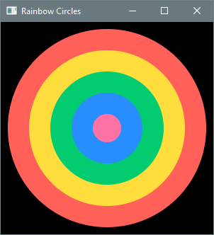
b. Petals. Draws a petal-like structure by rotating identical ellipses about their centers at regular intervals.
Output 6.5.2b
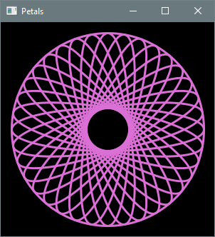
For an extra challenge, experiment with the use of RotateTransition and/or ScaleTransition to
animate individual petals.
c. Interleaved Squares. Draws a series of centered squares with decreasing side lengths. The fill color alternates between red and green, and red are rotated by squares by 45 degrees.
Output 6.5.2c-1
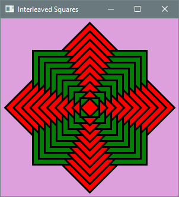
For an extra challenge, experiment with the use of RotateTransition to animate the individual
squares.
Output 6.5.2c-2
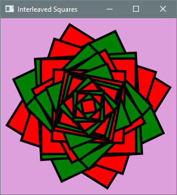
d. Color Bars. Draws a sequence of randomly colored vertical bars with their bases along the bottom edge of the scene. The height of each bar is chosen randomly between a fixed minimum and the height of the scene. The bars all have the same width and are separated by a fixed gap.
Output 6.5.2d
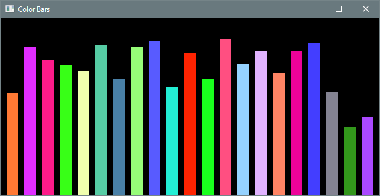
e. Random Tower. Draws a tower of rectangles spanning the scene from top to bottom. Each rectangle has the same height, while its width is chosen randomly between a fixed minimum and the width of the scene.
Output 6.5.2e
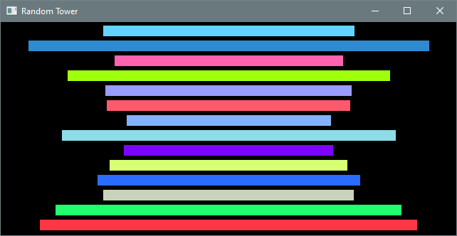
f. Around the Sun. Draws a top-down view of the Solar System with all the planets moving in circular orbits around the Sun.
Output 6.5.2f
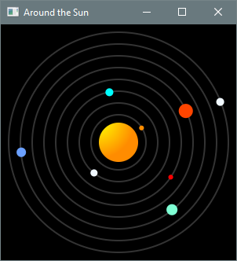
Use PathTransition to animate the planets along their orbits. The distances and planet sizes are
not to scale (and real planetary orbits are elliptical), but the relative orbital speeds should be.
Look up the orbital periods (or speeds) of the planets and scale them proportionally so that Mercury
completes one orbit every second.
One of the Chapter 7 practice problems invites you to simplify your solution to this problem using arrays.
g. Graphical π Approximator. Displays a graphical representation of the Monte Carlo simulation used to approximate π in Section 6.3.3. Random points are generated within a square scene. Different colors are used to distinguish points within the circumscribed quarter circle from those outside it.
Output 6.5.2g-1
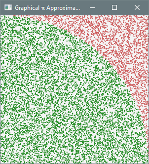
The fraction of points inside the quarter circle approximates π/4, so multiplying that fraction by four approximates π itself. Display this information in an alert dialog:
Output 6.5.2g-2
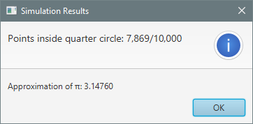
The following helper method can be used to display the results in an alert dialog:
/**
* Creates and returns an alert dialog with the simulation results.
*/
private static Alert getAlert(int pointsInQuarterCircle, int totalPoints) {
// Consult the API documentation for the Alert class.
}
start as follows:
// display simulation results
Alert alert = getAlert(pointsInQuarterCircle, totalPoints);
alert.showAndWait();
h. Down the Drain. Animates a dot moving along a spiral path.
Output 6.5.2h
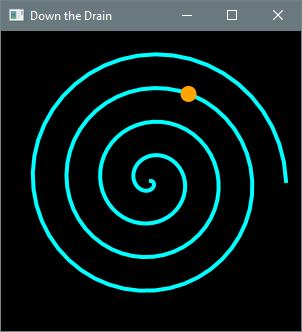
Use PathTransition for the animation. Represent the spiral as a Polyline whose vertices lie on
imaginary circles of gradually increasing radius. Constructing the polyline involves elementary
trigonometry, but the following code can be used without understanding the mathematics:
/**
* Creates and returns a polyline representing a spiral.
*
* @param x x-coordinate of center
* @param y y-coordinate of center
* @param n number of revolutions
* @param rStep increase in radius between successive vertices
* @param aStep increase in angle (in degrees) between successive vertices
*/
private static Polyline getSpiral(int x, int y, int n, double rStep, double aStep) {
Polyline spiral = new Polyline();
double radius = 0;
for (double angle = 0; angle < 2 * n * Math.PI; angle += Math.toRadians(aStep)) {
double u = x + radius * Math.cos(angle);
double v = y + radius * Math.sin(angle);
spiral.getPoints().addAll(u, v);
radius += rStep;
}
return spiral;
}
6.5.3 Monte Carlo Simulations
a. Roulette. An American roulette wheel has 38 equally sized slots. Two are green, 18 are red, and 18 are black. A common wager is to bet $1 on red. If the ball lands on a red slot, the player receives the original dollar back plus another dollar. Otherwise, the player loses the dollar.
Write a Monte Carlo simulation that estimates the expected payout.
Partial output 6.5.3a
Spin the roulette wheel and bet a dollar on RED.
Simulating 100,000,000 trials...
Expected payout:
The correct result is slightly negative, indicating a small expected loss.
b. Three of a Kind. Estimates the probability of rolling three of a kind with four dice. A positive outcome includes the case when all four dice are the same.
Partial output 6.5.3b
Rolling four dice 10,000,000 times...
Probability of rolling three of a kind:
The true probability is between 9 and 10 percent.
c. Thor vs. Zeus. Thor has nine 4-sided dice with faces numbered from 1 to 4. Zeus has six 6-sided dice with faces numbered from 1 to 6. They roll their dice and add up the numbers obtained. The highest total wins. The game is a draw if the totals are equal.
Write a Monte Carlo simulation that estimates the probability of victory for Thor.
Partial output 6.5.3c
Simulating Thor vs. Zeus 100,000,000 times...
Probability of victory for Thor:
The true probability is between 55 and 60 percent.
d. Seven and Eleven. Estimates the expected number of rolls of a pair of dice until sums of 7 and 11 have each occurred at least once.
Partial output 6.5.3d
Rolling until sums of 7 and 11 have each occurred at least once.
Repeating 10,000,000 times...
Expected number of rolls:
The true expected number of rolls is between 15 and 20.
e. Capybara Payout. Estimates the expected payout for the game of Capybara. The player rolls a pair of dice and wins the sum in dollars. Play continues until a sum of 7, 8, or 9 is rolled, ending the game without a payout for that roll.
Partial output 6.5.3e
Playing Capybara 100,000,000 times...
Expected payout: $
The true expected payout is between $8 and $9.
f. Okapi Payout. Estimates the expected payout for the game of Okapi. The player rolls three dice and receives a payout determined by the following rules.
- If the three numbers are the same, the player wins the sum of those three numbers.
- If exactly two of the numbers are the same, the player wins the sum of those two numbers.
- For three different numbers, the player wins nothing.
Partial output 6.5.3f
Playing Okapi 100,000,000 times...
Expected payout: $
The true expected payout is between $3 and $4.
g. Quetzal. Estimates the expected payout for the game of Quetzal. The player rolls three dice. The payout is equal to the number of even rolls multiplied by the sum of the even rolls, plus the number of odd rolls multiplied by the sum of the odd rolls. For example, a roll of 2-5-4 consists of two even rolls (2 and 4) and one odd roll (5), so the payout is 2 × (2 + 4) + 1 × 5 = $17. A roll of 3-1-5 consists of no even rolls and three odd rolls, so the payout is 0 + 3 × (3 + 1 + 5) = $27.
Partial output 6.5.3g
Playing Quetzal 100,000,000 times...
Expected payout: $
The true expected payout is between $20 and $22.
h. Colliding Kings. Two kings are placed on opposite corners of a standard chessboard. The black king starts at A1 (bottom left) and the white king starts at H8 (top right). Each second, the kings move simultaneously. The black king moves one square up or one square right (if both moves are possible, it chooses randomly). The white king moves one square down or one square left (also choosing randomly when both moves are possible). The kings are said to collide if they land on the same square at the same time.
Write a Monte Carlo simulation to estimate the probability of a collision.
Output 6.5.3g
Simulating the moving kings 10,000,000 times...
Probability of collision:
The probability is between 20 and 21 percent.
i. Relatively Prime. Two integers that have no common divisor greater than 1 are said to be relatively prime. For example, 12 and 15 are not relatively prime since they have the common divisor 3, but 12 and 25 are relatively prime. A remarkable result in number theory is that the probability of two random positive integers being relatively prime is 6/π2.
Write a Monte Carlo simulation to investigate this result. The user enters the number of integer pairs to generate and the number of digits in each integer. The simulation generates random pairs of positive integers of the specified length, displays the fraction of relatively prime pairs, and compares it with the double-precision floating-point value nearest to 6/π2.
Output 6.5.3i-1
Integer pairs: 1000000
Random digits: 50
Generating 1,000,000 random pairs of 50-digit integers...
Fraction of relatively prime pairs: 0.60801
Double-precision floating-point value nearest to 6/π^2: 0.60793
Output 6.5.3i-2
Integer pairs: 10000000
Random digits: 25
Generating 10,000,000 random pairs of 25-digit integers...
Fraction of relatively prime pairs: 0.60760
Double-precision floating-point value nearest to 6/π^2: 0.60793
Implement a helper method that creates and returns a randomly generated BigInteger with the
specified number of digits. Use the gcd method to find greatest common divisors.
This simulation can also be adapted to approximate π. Compare it with Listing 6.3.3. The two methods approximate the same geometric constant, but in remarkably different ways.
j. Sums in Ranges. Let P(a, b, n) denote the probability that the rolled sum of n ordinary 6-sided dice lies in the range [a, b]. For example, P(4, 7, 2) is the probability that the rolled sum of two dice is between 4 and 7 inclusive.
Write a Monte Carlo simulation that estimates P(a, b, n) for n = 2, 3, 4, 5 and every possible range [a, b]. Output the probabilities that are within 0.001 of 0.5.
Partial Output 6.5.3j
P(4, 7, 2) = 0.499999
P(7, 10, 2) = 0.500157
P(3, 10, 3) = 0.499906
The main method should iterate over the possible values of a, b, and n using nested loops. Implement a helper method that estimates P(a, b, n) for a given combination.
6.5.4 Console Applications with Nested Loops
a. Pyramid of Stars. Draws a pyramid of height specified by the user.
Output 6.5.4a-1
Pyramid height: 4
*
* * *
* * * * *
* * * * * * *
Output 6.5.4a-2
Pyramid height: 6
*
* * *
* * * * *
* * * * * * *
* * * * * * * * *
* * * * * * * * * * *
b. Slatipac. Prompts the user for a line of text and reverses each maximal substring consisting entirely of capital letters.
Output 6.5.4b-1
Input: GABCFabc
Output: FCBAGabc
Output 6.5.4b-2
Input: 123abcAZBCDExyzXSTZ
Output: 123abcEDCBZAxyzZTSX
Output 6.5.4b-3
Input: abcdefAABxyz
Output: abcdefBAAxyz
Output 6.5.4b-4
Input: AbCCDD-2EfghPONY
Output: AbDDCC-2EfghYNOP
c. Sum Sentences. Prompts the user for a string of digits and displays the string with one plus sign and one equals sign inserted to form a valid equation of the form A + B = C, if possible; otherwise, outputs the original string unchanged.
Output 6.5.4c-1
Enter a string of digits: 32896424
328 + 96 = 424
Output 6.5.4c-2
Enter a string of digits: 1122222233
11 + 2222 = 2233
Output 6.5.4c-3
Enter a string of digits: 1794326
1794326
Hint: Each substring can be interpreted directly as a BigInteger using the constructor that
takes a string. Use BigInteger arithmetic to test whether a given partition of the input forms a
valid equation of the form A + B = C.
d. Arithmetic Progressions. An arithmetic progression (AP) is a sequence of integers with a constant difference between successive terms. Let AP(k, d, n) denote the AP with initial term k, difference d, and length n. For example, AP(5, 3, 7) = 5, 8, 11, 14, 17, 20, 23.
Write a program that prompts the user for the parameters of two APs and displays the terms that appear in both.
Output 6.5.4d-1
AP parameters (k, d, n): 0 5 20
AP parameters (k, d, n): 1 4 40
Common terms: 5 25 45 65 85
Output 6.5.4d-2
AP parameters (k, d, n): 8 24 50
AP parameters (k, d, n): 5 9 60
Common terms: 32 104 176 248 320 392 464 536
A straightforward approach is to iterate over the terms of one AP and, for each term, check the terms of the other AP for a match. More efficient solutions exist using number-theoretic properties of arithmetic progressions.
e. Legs. Last week I hosted a dinner party for five people, including myself. As we started to eat, it occurred to me that there were 84 legs in the room. I was including spiders and cockroaches. Here's the calculation I scribbled on a napkin:
- 5 people × 2 legs = 10 legs
- 4 spiders × 8 legs = 32 legs
- 7 cockroaches × 6 legs = 42 legs
- TOTAL: 84 legs
This amused everyone, and someone wondered how many different combinations of people, spiders, and cockroaches have a total of 84 legs. It turns out there are 88 such combinations. For example, (7 people, 8 spiders, 1 cockroach) and (18 people, 6 spiders, 0 cockroaches) are both solutions.
Write a program that prompts the user for the total number of legs, and outputs the number of different combinations of people, spiders, and cockroaches having that many legs.
Output 6.5.4e-1
Number of legs: 20
Combinations of people, spiders, and cockroaches: 8
Output 6.5.4e-2
Number of legs: 100
Combinations of people, spiders, and cockroaches: 121
Output 6.5.4e-3
Number of legs: 500
Combinations of people, spiders, and cockroaches: 2688
f. Stacking Cubes. Given a collection of cubes, the goal is to arrange them into triangular stacks with no cubes left over. A triangular stack of height n contains 1 + 2 + ... + n cubes. For example, 34 cubes can be arranged into triangular stacks as shown below.
*
***
***** *
******* ***
********* *****
A single cube by itself counts as a stack of height one, so 35 cubes can be arranged by adding a stack of height one to the arrangement for 34 cubes.
*
***
***** *
******* ***
********* ***** *
It is always possible to arrange a given number of cubes into at most four triangular stacks.
Write a program that prompts the user for the number of cubes and outputs the heights of the triangular stacks in descending order. If there are several possible arrangements, choose the one with the largest first stack; ties are broken by the second stack, then the third.
Output 6.5.4f-1
How many cubes? 75
Height of 1st stack: 8
Height of 2nd stack: 3
Height of 3rd stack: 1
Height of 4th stack: 1
Output 6.5.4f-2
How many cubes? 5566
Height of 1st stack: 74
Height of 2nd stack: 9
Height of 3rd stack: 3
g. Stacking Cubes 2. This is a variation of the previous problem. Write a program that prompts the user for the number of cubes and displays the triangular stacks.
Output 6.5.4g-1
How many cubes? 35
*
***
***** *
******* ***
********* ***** *
Output 6.5.4g-2
How many cubes? 79
*
***
***** *
******* ***
********* *****
*********** ******* *
************* ********* *** *
h. Change Maker. Prompts the user for an amount in U.S. currency and displays all the ways to make that amount using nickels, dimes, and quarters. The input consists of a dollar sign followed by the amount in dollars and cents.
Output 6.5.4h-1
Enter amount: $0.35
1. 1 quarter + 1 dime
2. 3 dimes + 1 nickel
3. 1 quarter + 2 nickels
4. 2 dimes + 3 nickels
5. 1 dime + 5 nickels
6. 7 nickels
Output 6.5.4h-2
Enter amount: $1.23
Impossible to make change for that amount.
Partial Output 6.5.4h-3
Enter amount: $12.95
1. 51 quarters + 2 dimes
2. 49 quarters + 7 dimes
3. 47 quarters + 12 dimes
4. 45 quarters + 17 dimes
5. 43 quarters + 22 dimes
6. 41 quarters + 27 dimes
⋮
3456. 2 dimes + 255 nickels
3457. 1 dime + 257 nickels
3458. 259 nickels
The vertical ellipsis (⋮) in the last execution sample indicates that most of the output has been omitted here for typographical convenience, but your program should generate every combination.
6.5.5 Graphics Applications with Nested Loops
a. Circle Matrix. Draws a grid of randomly colored circles.
Output 6.5.5a
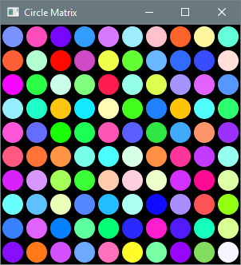
b. Stained Glass. Fills the viewing area with tiny overlapping squares. Each square is assigned a random color and rotation angle.
Output 6.5.5b
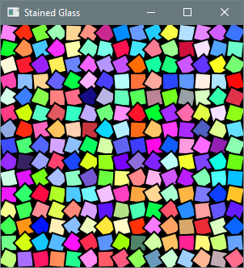
c. Disjoint Circles. Draws a collection of disjoint circles. The position, radius, and fill color of each circle are selected at random.
Output 6.5.5c
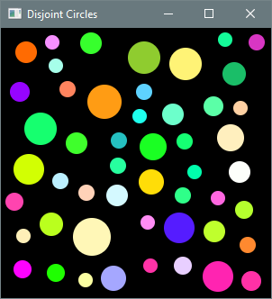
Before adding a new circle to the root node, ensure that it does not intersect any existing circle. The following code checks whether the new circle intersects any existing circle.
boolean intersectionFound = false;
for (Node node: root.getChildren()) {
Circle circle = (Circle) node;
Bounds bounds = circle.getBoundsInParent();
if (circleToAdd.intersects(bounds)) {
intersectionFound = true;
}
}
d. Chaos on a Square. Section 6.2.3 described the construction of a fractal called a Sierpinski triangle. The same general idea can be applied using the corners of a square instead of a triangle and repeatedly moving the current point halfway to a randomly chosen corner. However, the same corner must not be chosen twice in a row. Modify Listing 6.2.3a to draw this fractal.
Output 6.5.5d
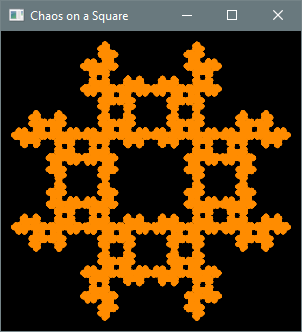
The construction of the Sierpinski triangle and the variation described here are both instances of a general concept known as the Chaos Game.